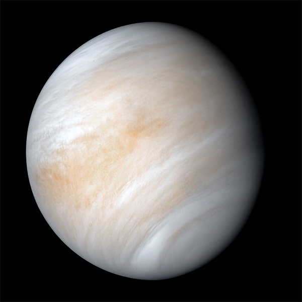
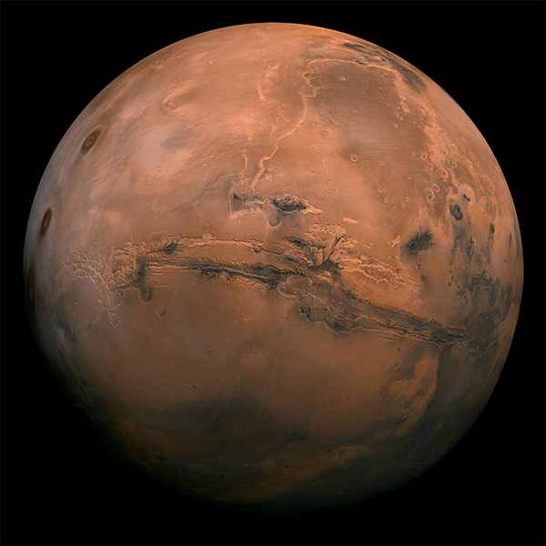
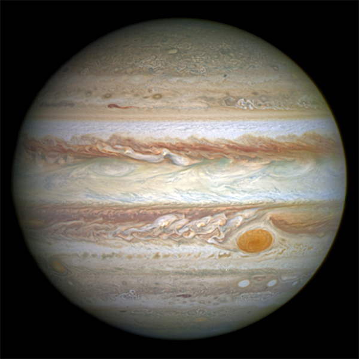
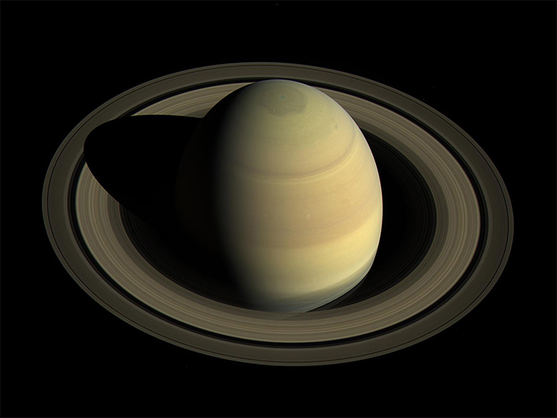
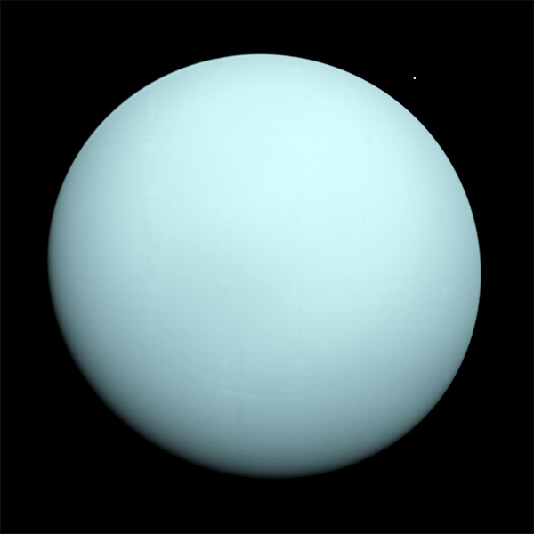

Mercury is the smallest and closest planet to the sun in the Solar System. Its orbit around the Sun takes 87.97 Earth days, the shortest of all the planets in the Solar System. It is named after the Greek god Hermes (Ερμής), translated into Latin as Mercurius (Mercury), god of commerce, messenger of the gods, mediator between gods and mortals.
Like Venus, Mercury orbits the Sun within Earth's orbit as an inferior planet, and its apparent distance from the Sun as viewed from Earth never exceeds 28°. This proximity to the Sun means the planet can only be seen near the western horizon after sunset or eastern horizon before sunrise, usually in twilight. At this time, it may appear as a bright star-like object, but is often far more difficult to observe than Venus. The planet telescopically displays the complete range of phases, similar to Venus and the Moon, as it moves in its inner orbit relative to Earth, which recurs over its synodic period of approximately 116 days.
Mercury rotates in a way that is unique in the Solar System. It is tidally locked with the Sun in a 3:2 spin–orbit resonance,[16] meaning that relative to the fixed stars, it rotates on its axis exactly three times for every two revolutions it makes around the Sun.[a][17] As seen from the Sun, in a frame of reference that rotates with the orbital motion, it appears to rotate only once every two Mercurian years. An observer on Mercury would therefore see only one day every two Mercurian years.
Mercury's axis has the smallest tilt of any of the Solar System's planets (about 1⁄30 degree). Its orbital eccentricity is the largest of all known planets in the Solar System;[b] at perihelion, Mercury's distance from the Sun is only about two-thirds (or 66%) of its distance at aphelion. Mercury's surface appears heavily cratered and is similar in appearance to the Moon's, indicating that it has been geologically inactive for billions of years. Having almost no atmosphere to retain heat, it has surface temperatures that vary diurnally more than on any other planet in the Solar System, ranging from 100 K (−173 °C; −280 °F) at night to 700 K (427 °C; 800 °F) during the day across the equatorial regions.[18] The polar regions are constantly below 180 K (−93 °C; −136 °F). The planet has no known natural satellites.
Two spacecraft have visited Mercury: Mariner 10 flew by in 1974 and 1975; and MESSENGER, launched in 2004, orbited Mercury over 4,000 times in four years before exhausting its fuel and crashing into the planet's surface on April 30, 2015.[19][20][21] The BepiColombo spacecraft is planned to arrive at Mercury in 2025.
Venus

Venus is the second planet from the Sun. It is named after the Roman goddess of love and beauty. As the brightest natural object in Earth's night sky after the Moon, Venus can cast shadows and can be, on rare occasion, visible to the naked eye in broad daylight.[15][16] Venus lies within Earth's orbit, and so never appears to venture far from the Sun, either setting in the west just after dusk or rising in the east a little while before dawn. Venus orbits the Sun every 224.7 Earth days.[17] With a rotation period of 243 Earth days, it takes longer to rotate about its axis than any other planet in the Solar System by far, and does so in the opposite direction to all but Uranus (meaning the Sun rises in the west and sets in the east).[18] Venus does not have any moons, a distinction it shares only with Mercury among the planets in the Solar System.[19]
Venus is a terrestrial planet and is sometimes called Earth's "sister planet" because of their similar size, mass, proximity to the Sun, and bulk composition. It is radically different from Earth in other respects. It has the densest atmosphere of the four terrestrial planets, consisting of more than 96% carbon dioxide. The atmospheric pressure at the planet's surface is about 92 times the sea level pressure of Earth, or roughly the pressure at 900 m (3,000 ft) underwater on Earth. Venus has, by far, the hottest surface of any planet in the Solar System, with a mean temperature of 737 K (464 °C; 867 °F), even though Mercury is closer to the Sun. Venus is shrouded by an opaque layer of highly reflective clouds of sulfuric acid, preventing its surface from being seen from space in visible light. It may have had water oceans in the past,[20][21] but these would have vaporized as the temperature rose due to a runaway greenhouse effect.[22] The water has probably photodissociated, and the free hydrogen has been swept into interplanetary space by the solar wind because of the lack of a planetary magnetic field.[23] Venus' surface is a dry desertscape interspersed with slab-like rocks and is periodically resurfaced by volcanism.
As one of the brightest objects in the sky, Venus has been a major fixture in human culture for as long as records have existed. It has been made sacred to gods of many cultures, and has been a prime inspiration for writers and poets as the "morning star" and "evening star". Venus was the first planet to have its motions plotted across the sky, as early as the second millennium BC.[24]
Due to its proximity to Earth, Venus has been a prime target for early interplanetary exploration. It was the first planet beyond Earth visited by a spacecraft (Mariner 2 in 1962), and the first to be successfully landed on (by Venera 7 in 1970). Venus' thick clouds render observation of its surface impossible in visible light, and the first detailed maps did not emerge until the arrival of the Magellan orbiter in 1991. Plans have been proposed for rovers or more complex missions, but they are hindered by Venus's hostile surface conditions.
The possibility of life on Venus has long been a topic of speculation, and in recent years has received active research. Following a 2019 observation that the light absorbance of the upper cloud layers was consistent with the presence of microorganisms, a September 2020 article in Nature Astronomy announced the detection of phosphine gas, a biomarker, in concentrations higher than can be explained by any known abiotic source.[25][26][27] However, doubts have been cast on these observations due to data-processing issues and the failure to detect phosphine at other wavelengths.[28] By late October 2020, re-analysis of data with a proper subtraction of background did not result in the detection of phosphine.[29][30][31]
Earth
Venus is the second planet from the Sun. It is named after the Roman goddess of love and beauty. As the brightest natural object in Earth's night sky after the Moon, Venus can cast shadows and can be, on rare occasion, visible to the naked eye in broad daylight.[15][16] Venus lies within Earth's orbit, and so never appears to venture far from the Sun, either setting in the west just after dusk or rising in the east a little while before dawn. Venus orbits the Sun every 224.7 Earth days.[17] With a rotation period of 243 Earth days, it takes longer to rotate about its axis than any other planet in the Solar System by far, and does so in the opposite direction to all but Uranus (meaning the Sun rises in the west and sets in the east).[18] Venus does not have any moons, a distinction it shares only with Mercury among the planets in the Solar System.[19]
Venus is a terrestrial planet and is sometimes called Earth's "sister planet" because of their similar size, mass, proximity to the Sun, and bulk composition. It is radically different from Earth in other respects. It has the densest atmosphere of the four terrestrial planets, consisting of more than 96% carbon dioxide. The atmospheric pressure at the planet's surface is about 92 times the sea level pressure of Earth, or roughly the pressure at 900 m (3,000 ft) underwater on Earth. Venus has, by far, the hottest surface of any planet in the Solar System, with a mean temperature of 737 K (464 °C; 867 °F), even though Mercury is closer to the Sun. Venus is shrouded by an opaque layer of highly reflective clouds of sulfuric acid, preventing its surface from being seen from space in visible light. It may have had water oceans in the past,[20][21] but these would have vaporized as the temperature rose due to a runaway greenhouse effect.[22] The water has probably photodissociated, and the free hydrogen has been swept into interplanetary space by the solar wind because of the lack of a planetary magnetic field.[23] Venus' surface is a dry desertscape interspersed with slab-like rocks and is periodically resurfaced by volcanism.
As one of the brightest objects in the sky, Venus has been a major fixture in human culture for as long as records have existed. It has been made sacred to gods of many cultures, and has been a prime inspiration for writers and poets as the "morning star" and "evening star". Venus was the first planet to have its motions plotted across the sky, as early as the second millennium BC.[24]
Due to its proximity to Earth, Venus has been a prime target for early interplanetary exploration. It was the first planet beyond Earth visited by a spacecraft (Mariner 2 in 1962), and the first to be successfully landed on (by Venera 7 in 1970). Venus' thick clouds render observation of its surface impossible in visible light, and the first detailed maps did not emerge until the arrival of the Magellan orbiter in 1991. Plans have been proposed for rovers or more complex missions, but they are hindered by Venus's hostile surface conditions.
The possibility of life on Venus has long been a topic of speculation, and in recent years has received active research. Following a 2019 observation that the light absorbance of the upper cloud layers was consistent with the presence of microorganisms, a September 2020 article in Nature Astronomy announced the detection of phosphine gas, a biomarker, in concentrations higher than can be explained by any known abiotic source.[25][26][27] However, doubts have been cast on these observations due to data-processing issues and the failure to detect phosphine at other wavelengths.[28] By late October 2020, re-analysis of data with a proper subtraction of background did not result in the detection of phosphine.[29][30][31]
Mars

Mars is the fourth planet from the Sun and the second-smallest planet in the Solar System, being larger than only Mercury. In English, Mars carries the name of the Roman god of war and is often referred to as the "Red Planet".[16][17] The latter refers to the effect of the iron oxide prevalent on Mars's surface, which gives it a reddish appearance distinctive among the astronomical bodies visible to the naked eye.[18] Mars is a terrestrial planet with a thin atmosphere, with surface features reminiscent of the impact craters of the Moon and the valleys, deserts and polar ice caps of Earth.
The days and seasons are comparable to those of Earth, because the rotational period as well as the tilt of the rotational axis relative to the ecliptic plane are similar. Mars is the site of Olympus Mons, the largest volcano and highest known mountain on any planet in the Solar System, and of Valles Marineris, one of the largest canyons in the Solar System. The smooth Borealis basin in the Northern Hemisphere covers 40% of the planet and may be a giant impact feature.[19][20] Mars has two moons, Phobos and Deimos, which are small and irregularly shaped. These may be captured asteroids, similar to 5261 Eureka, a Mars trojan.[21][22]
Mars has been explored by several uncrewed spacecraft. Mariner 4 was the first spacecraft to visit Mars; launched by NASA on 28 November 1964, it made its closest approach to the planet on 15 July 1965. Mariner 4 detected the weak Martian radiation belt, measured at about 0.1% that of Earth, and captured the first images of another planet from deep space.[23] The Soviet Mars 3 mission included a lander, which achieved a soft landing in December 1971; however, contact was lost seconds after touchdown.[24] On 20 July 1976, Viking 1 performed the first successful landing on the Martian surface.[25] On 4 July 1997, the Mars Pathfinder spacecraft landed on Mars and on 5 July released its rover, Sojourner, the first robotic rover to operate on Mars.[26] The Mars Express orbiter, the first European Space Agency (ESA) spacecraft to visit Mars, arrived in orbit on 25 December 2003.[27] In January 2004, NASA's Mars Exploration Rovers, named Spirit and Opportunity, both landed on Mars; Spirit operated until 22 March 2010 and Opportunity lasted until 10 June 2018.[28] NASA landed its Curiosity rover on August 6, 2012, as a part of its Mars Science Laboratory (MSL) mission to investigate Martian climate and geology.[29] On 24 September 2014, the Indian Space Research Organisation (ISRO) became the fourth space agency to visit Mars when its maiden interplanetary mission, the Mars Orbiter Mission spacecraft, arrived in orbit.[30] The United Arab Emirates became the fifth to successfully undertake a mission to Mars, having inserted an orbiter in to the Martian atmosphere on 9 February 2021.[31] NASA's Perseverance rover successfully landed on Mars on 18 February 2021.
There are investigations assessing the past habitability of Mars, as well as the possibility of extant life. Astrobiology missions are planned, such as the European Space Agency's Rosalind Franklin rover.[32][33][34][35] Liquid water on the surface of Mars cannot exist due to low atmospheric pressure, which is less than 1% of the atmospheric pressure on Earth, except at the lowest elevations for short periods.[36][37][38] The two polar ice caps appear to be made largely of water.[39][40] The volume of water ice in the south polar ice cap, if melted, would be sufficient to cover the planetary surface to a depth of 11 metres (36 ft).[41] In November 2016, NASA reported finding a large amount of underground ice in the Utopia Planitia region. The volume of water detected has been estimated to be equivalent to the volume of water in Lake Superior.[42][43][44]
Mars can easily be seen from Earth with the naked eye, as can its reddish coloring. Its apparent magnitude reaches −2.94, which is surpassed only by Venus, the Moon and the Sun.[12] Optical ground-based telescopes are typically limited to resolving features about 300 kilometres (190 mi) across when Earth and Mars are closest because of Earth's atmosphere.[45]
Jupiter

Jupiter is the fifth planet from the Sun and the largest in the Solar System. It is a gas giant with a mass one-thousandth that of the Sun, but two and a half times that of all the other planets in the Solar System combined. Jupiter is the third-brightest natural object in the Earth's night sky after the Moon and Venus. It has been observed since pre-historic times and is named after the Roman god Jupiter.[18]
Jupiter is primarily composed of hydrogen, but helium comprises one quarter of its mass and one tenth of its volume. It likely has a rocky core of heavier elements,[19] but like the other giant planets, Jupiter lacks a well-defined solid surface. The on-going contraction of its interior generates heat greater than the amount received from the Sun. Because of its rapid rotation, the planet's shape is that of an oblate spheroid; it has a slight but noticeable bulge around the equator. The outer atmosphere is visibly segregated into several bands at different latitudes, with turbulence and storms along their interacting boundaries. A prominent result of this is the Great Red Spot, a giant storm that is known to have existed since at least the 17th century, when it was first seen by telescope.
Surrounding Jupiter is a faint planetary ring system and a powerful magnetosphere. Jupiter has almost a hundred known moons and possibly many more,[20] including the four large Galilean moons discovered by Galileo Galilei in 1610. Ganymede, the largest of these, has a diameter greater than that of the planet Mercury.
Pioneer 10 was the first spacecraft to visit Jupiter, making its closest approach to the planet in December 1973; Pioneer 10 identified plasma in Jupiter's magnetic field and also found that Jupiter's magnetic tail is nearly 800 million kilometres long, covering the entire distance to Saturn.[21] Jupiter has been explored on a number of occasions by robotic spacecraft, beginning with the Pioneer and Voyager flyby missions from 1973 to 1979, and later by the Galileo orbiter, which arrived at Jupiter in 1995.[22] In 2007, Jupiter was visited by the New Horizons probe, which used Jupiter's gravity to increase its speed and bend its trajectory en route to Pluto. The latest probe to visit the planet, Juno, entered orbit around Jupiter in July 2016.[23][24] Future targets for exploration in the Jupiter system include the probable ice-covered liquid ocean of the moon Europa.
Saturn

Saturn is the sixth planet from the Sun and the second-largest in the Solar System, after Jupiter. It is a gas giant with an average radius of about nine times that of Earth.[20][21] It only has one-eighth the average density of Earth; however, with its larger volume, Saturn is over 95 times more massive.[22][23][24] Saturn is named after the Roman god of wealth and agriculture; its astronomical symbol (♄) represents the god's sickle. The Romans named the seventh day of the week Saturday, Sāturni diēs ("Saturn's Day") no later than the 2nd century for the planet Saturn.[25]
Saturn's interior is most likely composed of a core of iron–nickel and rock (silicon and oxygen compounds). Its core is surrounded by a deep layer of metallic hydrogen, an intermediate layer of liquid hydrogen and liquid helium, and finally a gaseous outer layer. Saturn has a pale yellow hue due to ammonia crystals in its upper atmosphere. An electrical current within the metallic hydrogen layer is thought to give rise to Saturn's planetary magnetic field, which is weaker than the Earth's, but which has a magnetic moment 580 times that of Earth due to Saturn's larger size. Saturn's magnetic field strength is around one-twentieth of Jupiter's.[26] The outer atmosphere is generally bland and lacking in contrast, although long-lived features can appear. Wind speeds on Saturn can reach 1,800 km/h (1,100 mph; 500 m/s), higher than on Jupiter but not as high as on Neptune.[27] In January 2019, astronomers reported that a day on the planet Saturn has been determined to be 10h 33m 38s + 1m 52s
− 1m 19s , based on studies of the planet's C Ring.[14][15]
The planet's most famous feature is its prominent ring system, which is composed mostly of ice particles, with a smaller amount of rocky debris and dust. At least 82 moons[28] are known to orbit Saturn, of which 53 are officially named; this does not include the hundreds of moonlets in its rings. Titan, Saturn's largest moon and the second largest in the Solar System, is larger than the planet Mercury, although less massive, and is the only moon in the Solar System to have a substantial atmosphere.[29]
Uranus

Uranus is the seventh planet from the Sun. Its name is a reference to the Greek god of the sky, Uranus, who, according to Greek mythology, was the grandfather of Zeus (Jupiter) and father of Cronus (Saturn). It has the third-largest planetary radius and fourth-largest planetary mass in the Solar System. Uranus is similar in composition to Neptune, and both have bulk chemical compositions which differ from that of the larger gas giants Jupiter and Saturn. For this reason, scientists often classify Uranus and Neptune as "ice giants" to distinguish them from the other gas giants. Uranus's atmosphere is similar to Jupiter's and Saturn's in its primary composition of hydrogen and helium, but it contains more "ices" such as water, ammonia, and methane, along with traces of other hydrocarbons.[16] It has the coldest planetary atmosphere in the Solar System, with a minimum temperature of 49 K (−224 °C; −371 °F), and has a complex, layered cloud structure with water thought to make up the lowest clouds and methane the uppermost layer of clouds.[16] The interior of Uranus is mainly composed of ices and rock.[15]
Like the other giant planets, Uranus has a ring system, a magnetosphere, and numerous moons. The Uranian system has a unique configuration because its axis of rotation is tilted sideways, nearly into the plane of its solar orbit. Its north and south poles, therefore, lie where most other planets have their equators.[21] In 1986, images from Voyager 2 showed Uranus as an almost featureless planet in visible light, without the cloud bands or storms associated with the other giant planets.[21] Voyager 2 remains the only spacecraft to visit the planet.[22] Observations from Earth have shown seasonal change and increased weather activity as Uranus approached its equinox in 2007. Wind speeds can reach 250 metres per second (900 km/h; 560 mph).[23]
Neptune
Neptune is the eighth and farthest-known Solar planet from the Sun. In the Solar System, it is the fourth-largest planet by diameter, the third-most-massive planet, and the densest giant planet. It is 17 times the mass of Earth, slightly more massive than its near-twin Uranus. Neptune is denser and physically smaller than Uranus because its greater mass causes more gravitational compression of its atmosphere. The planet orbits the Sun once every 164.8 years at an average distance of 30.1 AU (4.5 billion km; 2.8 billion mi). It is named after the Roman god of the sea and has the astronomical symbol ♆, a stylised version of the god Neptune's trident.
Neptune is not visible to the unaided eye and is the only planet in the Solar System found by mathematical prediction rather than by empirical observation. Unexpected changes in the orbit of Uranus led Alexis Bouvard to deduce that its orbit was subject to gravitational perturbation by an unknown planet. After Bouvard's death, the position of Neptune was predicted from his observations, independently, by John Couch Adams and Urbain Le Verrier. Neptune was subsequently observed with a telescope on 23 September 1846[1] by Johann Galle within a degree of the position predicted by Le Verrier. Its largest moon, Triton, was discovered shortly thereafter, though none of the planet's remaining 13 known moons were located telescopically until the 20th century. The planet's distance from Earth gives it a very small apparent size, making it challenging to study with Earth-based telescopes. Neptune was visited by Voyager 2, when it flew by the planet on 25 August 1989; Voyager 2 remains the only spacecraft to visit Neptune.[17][18] The advent of the Hubble Space Telescope and large ground-based telescopes with adaptive optics has recently allowed for additional detailed observations from afar.
Like Jupiter and Saturn, Neptune's atmosphere is composed primarily of hydrogen and helium, along with traces of hydrocarbons and possibly nitrogen, though it contains a higher proportion of "ices" such as water, ammonia and methane. However, similar to Uranus, its interior is primarily composed of ices and rock;[19] Uranus and Neptune are normally considered "ice giants" to emphasise this distinction.[20] Traces of methane in the outermost regions in part account for the planet's blue appearance.[21]
In contrast to the hazy, relatively featureless atmosphere of Uranus, Neptune's atmosphere has active and visible weather patterns. For example, at the time of the Voyager 2 flyby in 1989, the planet's southern hemisphere had a Great Dark Spot comparable to the Great Red Spot on Jupiter. More recently, in 2018, a newer main dark spot and smaller dark spot were identified and studied.[22] Nonetheless, these weather patterns are driven by the strongest sustained winds of any planet in the Solar System, with recorded wind speeds as high as 2,100 km/h (580 m/s; 1,300 mph).[23] Because of its great distance from the Sun, Neptune's outer atmosphere is one of the coldest places in the Solar System, with temperatures at its cloud tops approaching 55 K (−218 °C; −361 °F). Temperatures at the planet's centre are approximately 5,400 K (5,100 °C; 9,300 °F).[24][25] Neptune has a faint and fragmented ring system (labelled "arcs"), which was discovered in 1984, then later confirmed by Voyager 2.[26]